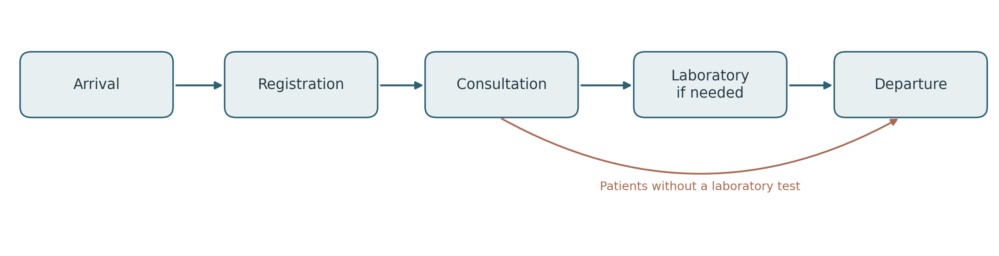
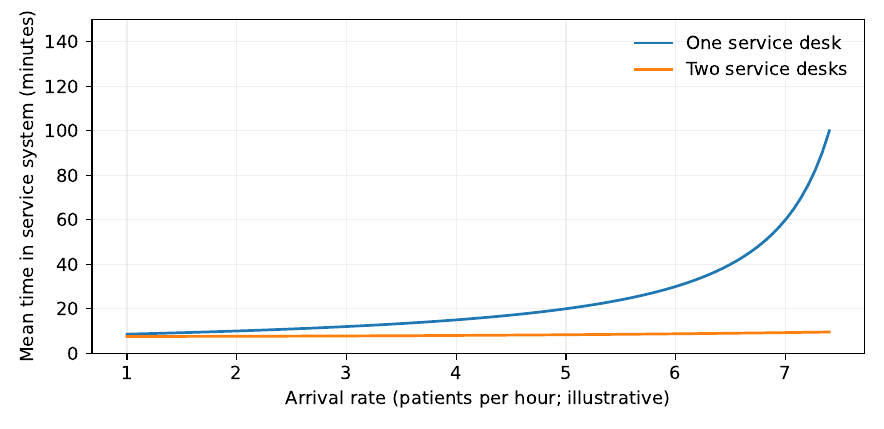
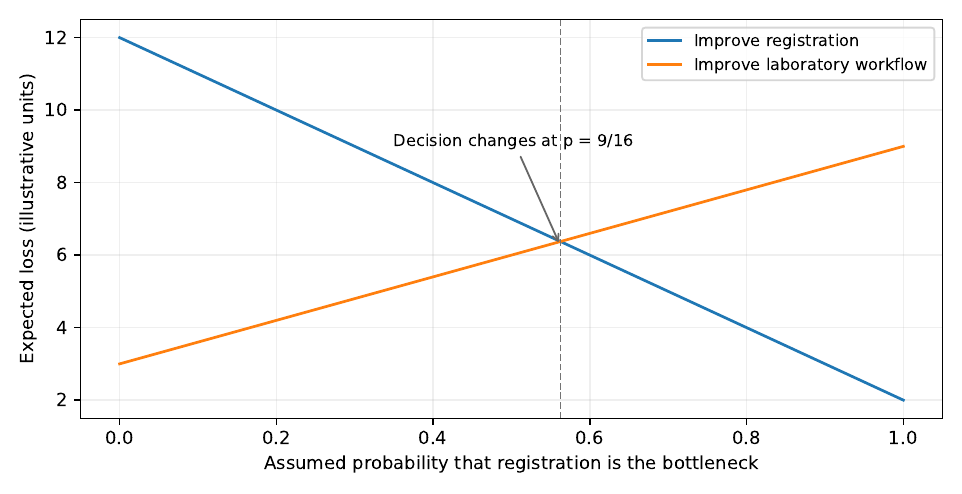

Problems Worth Solving
A useful solution begins with a question that can be answered, a decision someone can make, and a reason to believe that the decision will help. In practice, those three things are often missing when a project begins. Someone has seen an urgent problem. Someone else has proposed a piece of software. By the time the mathematician is invited to the meeting, the discussion may already be about the technology rather than the people it is meant to serve.
This chapter is about the work that must happen before the first model is fitted. We shall follow a fictional health centre, examine several tempting but premature solutions, and use a little probability and queueing theory to make the choices precise. The calculations are genuine consequences of the models we state. The clinic, its measurements and its costs are illustrative; they are not observations from a health facility. That distinction matters throughout the book.
An ordinary morning at a health centre
A patient reaches a rural health centre shortly after eight in the morning. There is already a queue at registration. The clinical officer has started seeing patients, but the laboratory is recovering from a machine fault. The power went off during the night, and one computer has not restarted properly. Some people have travelled for hours. Others have small children with them and will need to leave before public transport becomes scarce in the afternoon.
At the following staff meeting, the head of the facility describes the problem: patients are waiting too long. A visitor suggests a machine-learning system to forecast the number of people who will arrive each morning. An accurate forecast, the visitor argues, would allow the facility to prepare.
The suggestion is not foolish. Arrivals might well be predictable. Yet it is possible to build an excellent forecast and leave the waiting time unchanged. If there is no qualified worker available to open another desk, knowing tomorrow’s attendance may not change anything. If the laboratory is the bottleneck, moving people through registration faster may only move the queue down the corridor. If a computer stops working each time electricity fails, another digital system might add to the trouble rather than remove it.
Before the meeting ends, the team needs to ask something less impressive than whether artificial intelligence will work: where, exactly, are patients losing time, and which part of that delay can the facility change?
We will use that question to organise the chapter. No one should mistake the fictional story for a report about Ugandan clinics in general. Its purpose is to expose the reasoning a real investigation would require, not to supply evidence that has not been collected.
The complaint is not yet the problem
Patients need timely and appropriate care. A long queue is a symptom of a service that may be failing to meet that need. A proposed second registration desk is an action. A shorter visit without a loss of safety or accuracy is a possible objective. Limited staff, rooms, money and equipment are constraints. None of these is interchangeable with the others.
Consider the manager’s statement, “Our objective is to introduce electronic registration.” An electronic system is something the manager might buy or build. It is not what patients ultimately need. The manager could introduce the system, meet the project deadline and spend the allocated budget, yet leave patients waiting for the same length of time. A better objective would describe the change in service that matters: for example, to reduce time spent before consultation without increasing record errors, clinical delays or staff workload beyond acceptable limits.
| Question | What the clinic must establish |
|---|---|
| Whose problem is it? | Patients, workers and the institution may experience different costs. |
| What is actually observed? | Which patients wait, at what stage, for how long and on which days? |
| What might cause it? | Arrival peaks, low capacity, interruptions or delays at later stages. |
| Who can act? | Which manager or worker has authority to change a timetable or procedure? |
| What could be changed? | Staffing times, service flow, appointments, equipment or paperwork. |
| How will success be judged? | Waiting, access, error rates, costs and consequences for different groups. |
| What may not be sacrificed? | Clinical safety, privacy, staffing requirements and equitable access. |
The cause is particularly important. The same visible queue can result from very different systems. An arrival surge may make an otherwise adequate registration desk temporarily busy. A consultation bottleneck may cause staff to hold patients back at registration. Laboratory results may take hours while the register records only a few minutes of clerical work. A queue is something we see; its cause is something we have to investigate.
Follow the work before measuring it
Imagine walking through the clinic with a nurse and a records officer. The nurse points out that some patients go straight from registration to consultation while others need laboratory tests. The records officer explains that a file number must be entered twice whenever the network is unavailable. A patient tells you that the longest part of the visit was not the queue you saw at the door, but the wait for results after consultation.
These are not contradictions. They may be descriptions of different stages. A model of registration alone cannot account for time spent elsewhere. The first useful drawing is therefore not a neural network. It is a simple map of what happens to a patient.

For patient following a sequence of service stages , write the time spent in the facility as
where is waiting before stage , is time receiving service, and is transfer or administrative delay. The stages actually visited must be recorded; otherwise the sum may include care the patient never needed. We should not claim that a change in improves the whole visit unless we also examine what happens to the other terms.
It is worth spending time on the measurements before opening a
spreadsheet. A timestamp called registration_time could
mean arrival at the door, the moment a register is opened, or the time
the clerk finishes. These lead to different waiting-time estimates. A
patient may be recorded only after completing registration, leaving
those who abandon the queue out of the data altogether. Two devices with
unsynchronised clocks can produce a negative waiting time. A record that
contains only the day’s total attendance cannot tell us whether nearly
everyone came at eight or arrived evenly through the morning.
| Field | Meaning | Why it is needed |
|---|---|---|
| Visit code | A de-identified identifier for one service visit | Joins the stages without storing names in the analysis file |
| Arrival time | Time the patient reached the defined queue entrance | Establishes the start of the waiting period |
| Service start and end | Times at which each stage begins and finishes | Separates waiting from service |
| Stage and route | Registration, consultation, laboratory or another step | Prevents unlike journeys from being treated as identical |
| Staff on duty | Qualified workers actually available during each interval | Describes operational capacity |
| Interruption log | Start, end and nature of a service interruption | Helps investigate the effect of outages and equipment failures |
| Exit or abandonment | Whether care was completed, deferred or not received | Makes unmet demand visible |
A real project would first check whether the desired measurements are necessary, feasible and lawful to collect. It would minimise personally identifying data, agree on a time standard, record missingness and specify who can access the information. The World Health Organization’s service-readiness framework can help describe some aspects of facility capacity, but it does not replace a time-stamped study of patient journeys (World Health Organization 2015).
There is an important difference between an explanation that fits a story and one that survives a fair test. Imagine that the records officer blames a slow computer while the nurse blames the laboratory. Both accounts may be plausible, and both may involve real difficulties, but neither tells us how much each difficulty contributes to the patient’s visit. A useful comparison would ask what we expect to see if one explanation is dominant and the other is not. When the computer is down, does the registration queue grow? When the computer is working but the laboratory is delayed, does the total visit still take hours? Do patients who require no test leave much earlier than those who need results? A few carefully chosen observations may settle more than a very large file of daily totals.
The question should not be framed so that the favourite explanation always wins. Suppose the team believes that registration is the bottleneck. It should actively look for a morning when registration finishes quickly but the long waits persist. That is the kind of observation that could change the recommendation. A project is in danger when every contradictory record is dismissed as an exception while every supporting record becomes evidence of success. Good problem formulation includes a reasonable account of what would count against the proposed mechanism.
Timing matters as much as the choice of variables. A queue length noted once at noon may miss an intense morning peak. A register that records only those who complete service cannot describe the people who give up. An interruption log written at the end of the day may round away short failures that matter. Conversely, recording every action to the nearest second would add work without much value if the decision concerns monthly equipment purchases. Measurements need to be fine enough to distinguish the competing explanations, but not more elaborate than the decision requires.
We should also ask what the data would cost to obtain. Observing one service stage may require a trained worker who could otherwise assist patients. Installing a tracking system may raise privacy concerns. If the likely alternatives remain the same under every plausible result, the additional study may have little value. If one observation would distinguish a cheap timetable change from an expensive software purchase, the investigation may be worthwhile. We will return to this idea when we calculate the value of information.
The people who use the system are also sources of knowledge. Instead of asking, “Would you like a new app?”, ask a worker to describe the last morning when the service became unmanageable. What happened first? What did they try? Which option was unavailable? Ask a patient where time was lost, without demanding clinical details not needed for the project. A useful conversation is one in which a proposed explanation can turn out to be wrong.
The distinction between structure, process and outcome has a long history in health-service research. Donabedian (1988) gave a foundational account of why the resources available, the work performed and the consequences for patients should not be treated as the same measure. In our example, adding a computer changes an input; entering records more quickly changes a process; helping patients receive appropriate care sooner is a possible outcome. One does not automatically establish the next.
Turn the complaint into a decision
Suppose the facility really can choose among three arrangements for the morning: keep the current schedule, start one qualified worker earlier, or temporarily open a second registration desk. We may denote the feasible actions by
The word feasible carries weight. If the second desk requires taking a worker away from an unsafe laboratory shift, that option might not belong in at all. Technical feasibility, managerial authority and acceptable consequences must be considered before the optimisation begins.
A decision has uncertain outcomes. Let represent conditions such as arrivals, staff absences and equipment interruptions. Let be the loss when action is taken under conditions . Loss could represent a financial cost, an agreed service measure, or several consequences combined using an explicitly defended rule. When the probability distribution of is credible, a familiar decision criterion is
Writing the expectation does not make uncertain measurements reliable, nor does it tell us what society should value. It simply exposes what a calculation would require: available actions, a loss function and evidence about the situations in which the actions will be used.
For example, if is total patient waiting-hours over the morning and is the additional cost of staffing for that same morning, we could examine
where is the cost or decision weight per patient-hour. The units now agree: patient-hours multiplied by cost per patient-hour, plus staffing cost. In a less careful formulation, someone might add a cost for the whole morning to an average number of hours per patient. Both terms would be numbers, but their sum would not mean what the author claims.
Not every consequence should be priced. A better approach may be to minimise expected waiting subject to a staffing budget, a clinical safety requirement and a limit on unusually long delays:
Here denotes a group for which a waiting-time safeguard is justified. Such limits require stakeholder judgement and adequate subgroup data. They must not be invented merely to make the optimisation look complete.
A further question is often overlooked: does anyone have authority to use the answer? A scheduling prediction is of little practical value when staffing cannot change. An elegant assignment may be unusable when qualifications prevent the proposed shift. The first obligation of an applied mathematician is not to make every decision look optimisable. It is to describe the decision that actually exists.
What a queueing model can and cannot tell us
We can now put some mathematics beside the clinic story. First, deliberately ignore the multiple stages, different patient needs, interruptions and changing arrival rates. Imagine one registration desk with a single line. Patients arrive independently according to a Poisson process at mean rate per hour. Registration times are independent exponential random variables with mean hours. Patients are served in arrival order and, for this calculation, do not leave the line. This is the standard model (Gross et al. 2008; Law 2015).
We use the model because it is simple enough to check, not because health centres necessarily satisfy its assumptions. Write . In the stable case , the long-run probability of patients in the system is
This follows from balancing the flow between adjacent queue lengths: the rate of transitions from to is and from to is . Thus , and the probabilities sum to one only when . Differentiating the geometric series gives the mean number in the system,
Little’s law relates long-run throughput, mean number present and mean time spent in a stable system: (Little 1961). Here the conventional queueing symbol means mean number present; it is unrelated to the loss function introduced earlier. Under the stated assumptions, the mean time in registration, including the actual service, is therefore . The mean time spent waiting before service is smaller:
That difference is important. For an invented arrival rate of six patients per hour and a service rate of eight per hour, equation gives hour, or thirty minutes. Only minutes are spent waiting in line; the remaining minutes are spent registering. Calling the whole thirty minutes “queueing delay” would be a small but consequential error.
The striking feature of this model is what happens near full utilisation. If stays fixed while rises, the spare capacity becomes small and grows rapidly. Indeed,
This is why a modest increase in arrivals can produce a large increase in time. It also warns us that a poorly estimated arrival rate can give a misleading staffing recommendation. Testing a range of plausible rates is more defensible than trusting one convenient estimate (Saltelli et al. 2008). If , the stationary formulas are not valid; inserting a larger arrival rate and obtaining a negative time is not a result about real patients. It is a sign that the calculation has been used outside its assumptions.

What would another desk change?
Suppose the existing service rate of each worker is eight registrations per hour. The manager considers either a modest procedural improvement that increases one worker’s rate to nine per hour, or a second equally fast desk sharing a common queue. For identical servers, set and utilisation . Its steady-state waiting calculation, commonly called the Erlang-C formula, is
The results for patients per hour are as follows. All figures come from the companion calculations; they are not field estimates.
| Assumed arrangement | Mean wait before service | Mean time including service | Utilisation per server |
|---|---|---|---|
| One desk, | 22.50 min | 30.00 min | 0.750 |
| One desk, | 13.33 min | 20.00 min | 0.667 |
| Two desks, each | 1.23 min | 8.73 min | 0.375 |
The second desk looks exceptionally attractive if we read only the waiting-time column. It may also require a second qualified worker, desk space, additional equipment and the diversion of staff from another activity. The model contains none of those costs. Nor does it say how many patients need the laboratory afterwards. A numerical difference is not yet a recommendation.
There is another limitation. An average arrival rate of six per hour does not mean the patients arrive evenly. Twenty-four patients spread over four hours give six per hour, but so do twenty-four patients who all arrive in the first hour and almost none over the next three. The second pattern produces a temporary queue even though daily capacity appears adequate. The stationary calculation cannot reconstruct it. A time-stamped trace, a time-varying model or a discrete-event simulation would be needed. These alternatives also require care in defining service order, urgency, breaks and interruptions (Law 2015).
A queue may simply move
Suppose, in a second illustrative calculation, every patient visits two stages in sequence, each initially serving ten per hour, and patients arrive at eight per hour. If both stages can be represented as stable stationary queues with the necessary assumptions about the flow between them, each has mean time in system of hour. Total mean time across the two stages is one hour. Increasing the first stage’s service rate to sixteen per hour reduces time at that stage to hour, but leaves the second stage at half an hour. The total becomes hour.
In this special model, the first stage improves by 75 percent while the total time improves by 37.5 percent. The figures are not contradictory. They describe different outcomes. In a real service, faster registration might also change arrivals to the next stage, staff assignments, the order of care and the number of patients leaving; the simple calculation would no longer suffice. The larger point is practical: measure the patient’s complete journey, not merely the component that the project team happens to control.
A useful basic check does not even require queueing theory. If is the cumulative number of arrivals, is completed departures, counts people who abandon service, and is the initial number present, then
This is an accounting identity, not a probabilistic model. If a dataset violates it, something is missing or duplicated. Checking that balance can be more valuable than fitting a sophisticated prediction to inconsistent records.
An accurate prediction is not necessarily a useful one
Return to the proposal for an attendance forecast. Suppose tomorrow’s demand over a particular period is , and workers can each handle approximately arrivals. One way to compare staffing choices is to combine staffing cost with penalties for unserved demand and unused capacity:
Here is cost per worker for the period, is the penalty per arrival that cannot be handled within the modelled capacity, and is a penalty for unused capacity. This is only a teaching loss function. In a health service, delaying urgent care cannot be made acceptable merely by assigning it a conveniently small monetary weight.
Let , , and in invented common cost units. With actual demand , two workers cost , while three cost . Under these assumed weights, two workers are preferable by three units. Increase the penalty for unserved demand and the ranking can reverse. The mathematics does not decide what the consequences of delay ought to cost; the decision-maker must defend those weights.
Now suppose one model predicts arrivals and another predicts , with actual demand . The first is closer. But an operational rule that assigns two workers when the forecast is below and three otherwise would produce different actions. Which action is preferable depends on costs and service requirements, not simply the numerical distance between forecast and outcome. Predictive accuracy matters, but its relation to decision quality must be demonstrated rather than assumed. Proper evaluation of probabilistic forecasts and scoring rules is discussed by Gneiting and Raftery (2007).
The baseline for such an evaluation should be what the facility already does, not an imaginary organisation that has no knowledge at all. Staff may recognise market days or school opening dates that affect demand. They may already adjust shifts through a telephone call. A simple timetable change might achieve most of the benefit of a forecasting system at a fraction of its operating cost. If a new model is proposed, compare it with these real practices and with a credible simple rule.
When is another measurement worth its cost?
Sometimes the team cannot agree whether registration or the laboratory is responsible for most of the delay. A short observation study could help. It could also waste time and money if the answer would not change any feasible decision. This brings us to a different mathematical question: how much can information improve a choice?
Assume two possible states: registration is the main bottleneck, denoted , or the laboratory is, denoted . There are two actions: improve registration, , or improve laboratory workflow, . The losses below are invented and measured in comparable units per decision period.
| Action | State | State |
|---|---|---|
| Improve registration, | 2 | 12 |
| Improve laboratory workflow, | 9 | 3 |
Suppose and . Improving registration has expected loss . Improving laboratory workflow has expected loss . With the evidence currently available, the first action wins, though not by much.
If someone could reveal the true state with certainty before the action is chosen, the expected loss would be . The expected value of perfect information is therefore
The value is nonnegative because learning the truth does not force a change of action. This is an upper bound on the gain available from information within the stated model, not an estimate of what a real study would save. It must be compared with costs over the same decision horizon (Raiffa 1968).
Perfect knowledge is rarely available. Suppose a brief diagnostic exercise correctly flags registration as the bottleneck in 80 percent of state- cases, and incorrectly flags it in 25 percent of state- cases. The probability of a positive report is . Bayes’ rule gives
For a negative report, the corresponding probability is . A positive result supports action ; a negative result supports . We can calculate the expected loss under that policy without rounding posterior probabilities:
The expected value of sample information is units, less than the units available under perfect information. If the exercise costs two loss units for a decision that governs only one period, its net value is negative. If its result guides several future periods, the conclusion may change, but only if the causal state remains relevant and the benefits and costs are compared over the same horizon.

There is a particularly useful way to read the loss table. If , then has expected loss , while has expected loss . Registration improvement is preferable precisely when
This tells us which uncertainty matters. A refined estimate of is unlikely to change a decision when every plausible value lies well above . A modest observation that moves credible beliefs across the threshold may be worth much more. The relevant question is not, “Can we collect more data?” It is, “Could the information change what we do?”
Whose waiting time counts?
An average can hide a great deal. Suppose a revised appointment system reduces average waiting from fifty to forty minutes. That improvement may be genuine. But if people with reliable phones gain most of the time while patients from distant villages wait longer, a single overall number does not describe the service fairly.
Consider two equally sized patient groups. Before a change, Group A waits an average of ten minutes and Group B ninety, making the overall mean fifty. After the change, Group A waits five minutes and Group B ninety-five. The mean remains fifty. One group has gained while the other has lost. There is no contradiction in the arithmetic; there is a problem in the choice of what to report.
At minimum, a serious waiting-time investigation should distinguish time in service from time waiting, report a median and a high percentile, record abandonment, and examine differences between groups where there is a defensible reason and enough data to do so. Group comparisons must be planned with care: very small samples create unstable estimates, and collecting sensitive personal characteristics simply because they might be useful is not justified.
Risk also has a tail. An arrangement can have a good mean while producing occasional unacceptable delays. If the loss is integrable, a risk-sensitive alternative is conditional value at risk at level ,
A beginner need not optimise this expression to grasp its purpose. It is one way to describe the losses in the worse tail rather than the average alone. The choice of the tail level, the service standard and the admissible action must come from the actual risk, clinical requirements and people affected. Mathematics helps make those commitments visible; it does not make them on our behalf.
Design a small study that could prove the proposal wrong
The clinic has several possible ways forward: adjust a staff start time, temporarily add a desk, revise appointment arrangements, repair a recurrent equipment fault, or build a forecasting system that triggers an authorised action. At this stage it would be premature to announce which one is best. It is possible, however, to design the next useful investigation.
A team might begin with a short period of structured observation. It would record arrival and service times by stage, actual staffing, interruptions and patients leaving before completion. It would check the records against the flow identity in equation and inspect the arrival pattern by hour. A queueing model might then be tested against the traces, with discrepancies shown rather than hidden. If the model is inadequate, that finding would be useful: perhaps arrivals are too clustered or service times are too variable for the simple assumptions.
If registration is confirmed as an important and changeable source of delay, the team might test a revised staffing schedule. The claim should be specified before results are seen. For example: on mornings with high measured arrivals, starting one qualified registration worker earlier will reduce median time from arrival to consultation relative to the existing schedule, without increasing delays at later stages or record errors. That is a claim that can fail in several informative ways.
The evaluation also needs a comparison. A before-and-after difference can reflect changes in patient volume, case mix, weather, equipment and staff availability rather than the timetable. Random assignment of safe alternatives across appropriate morning sessions may be possible, subject to institutional approval and ethical safeguards. Otherwise, a defensible comparison design must explain which assumptions are needed to interpret differences as effects (Hernán and Robins 2020). Chapter 9 develops these questions in depth.
If whole mornings are assigned to different staffing arrangements, the morning is a unit of assignment. Ten patients arriving during the same morning are not ten independent interventions. Standard errors that pretend otherwise may substantially overstate precision. A small pilot should be described as a small pilot: it may reveal whether a procedure is workable and worth evaluating further without establishing a reliable annual treatment effect.
A study should also have stopping rules. If the changed schedule delays urgent care, creates an unsafe workload or prevents a group of patients from accessing services, the team must be able to revert. It must be possible for an evaluation to conclude that the new method should not be deployed. A project that cannot produce such a conclusion is not an honest test.
Remember the costs after the demonstration
The proposed system has a life beyond its first successful trial. Somebody must enter data, train new staff, replace devices, maintain software and resolve failures when the original programmer is away. A simple financial representation is
where is the initial cost, the discount rate, and the cost of responsible migration or shutdown in period . Discounting the exit cost as well as the recurring costs keeps the time convention consistent. All these quantities would require defensible estimates. A free prototype maintained by one enthusiastic student is not necessarily a low-cost service.
A simple timetable adjustment has costs of its own, including negotiation and training. But it may work during power cuts and be easier to maintain. The relevant comparison is between viable ways of improving the service, measured over a realistic period, not between a sophisticated system and an imaginary world with no costs.
The record a team should leave behind
Before the first line of production software is written, the team ought to be able to leave a short account that another person can inspect. Call it a Problem Definition Record. It need not be a bureaucratic form. Two careful pages may suffice for a small project. The record should tell a future reader what was noticed, what the team thought might cause it, which actions were genuinely available, what would count as improvement, and what was still uncertain.
For our fictional facility, it might say that the current question concerns the morning service schedule, not the purchase of a prediction system. The suspected mechanisms include concentrated arrivals and registration capacity, but downstream queues and interruptions have not been ruled out. The intended outcomes are time from arrival to completion of required care, unacceptable waits, abandonment and record accuracy. The schedule is constrained by staff qualifications and safety. The next action is a limited, authorised measurement of patient flow, followed by comparison of a simple scheduling alternative with current practice. No claim about operational improvement has been established yet.
The record should also say what would change the team’s mind. Evidence that the laboratory accounts for most of the delay would weaken the case for registration-only work. Evidence that staff cannot act on a forecast would weaken the case for building one. An inability to collect timestamps reliably would call for better measurement before a detailed queue model. Such admissions do not make a proposal weak. They make it possible to improve or abandon a poor idea before it consumes scarce resources.
These distinctions are useful far beyond a clinic. Consider a rural water scheme where residents complain that water fails to reach some homes. One team proposes a sensor network, another a larger tank, and a third a change in pumping hours. Before deciding, the engineer would need to distinguish total water shortage from uneven distribution, power interruptions, leakage and the timing of demand. A full tank at the wrong time is not the same as adequate supply at a household tap. A model of total daily volume will not reveal pressure losses along a pipe, just as a daily patient count does not reveal a morning queue.
At a school, the visible problem might be late examination results. The head teacher could request a new records application. But perhaps marks are entered late because teachers must reconcile inconsistent class lists, or because the only person authorised to approve results is frequently away. A faster database cannot fix an approval rule unless the institution changes that rule. The sound first step is to trace how a result moves from a student’s script to the report sent home, find where the delay accumulates and identify a feasible change. That investigation may eventually justify a spreadsheet, a web application or no new technology at all.
These two settings differ from the clinic in their human consequences, technical constraints and standards of success. They share a logical structure: an undesirable outcome, competing causes, limited actions, uncertain information and consequences borne by people. That is the structure this book will return to in modelling, data work, optimisation, machine learning and deployment. The methods should travel across countries because the reasoning can travel; conclusions about particular places cannot travel without new evidence.
The next chapter asks how to turn such a problem into a mathematical representation that is useful without losing sight of the real system. The question at the end of this chapter is still modest: have we understood enough to know what deserves to be modelled?
Computational laboratory: decisions before algorithms
This laboratory runs on an ordinary computer and needs only Python,
NumPy and Matplotlib. The companion notebook,
notebooks/chapter01_decisions.ipynb, works through the
calculations in the text and produces the two queue and decision
figures. The script code/chapter01_checks.py checks the
principal numerical results and writes a small CSV table. Both use
assumed inputs; neither reads observations from a clinic.
Begin by checking the one-server formulas with and . Derive the stationary probabilities rather than relying solely on the plot. Then examine what happens when the arrival rate approaches eight. Plot only stable values, and explain the meaning of the vertical rise. Next compare the faster single desk and two-desk arrangement, noting what the computation leaves out of the decision.
In the second part, use the two-state loss table in table. Verify the expected losses, the perfect-information bound and the imperfect-test value. Change the prior probability and identify the point at which the preferred action switches. Finally, assign a cost to gathering the observation and compute whether the test’s value exceeds that cost. The notebook includes assertions so that an incorrect answer cannot quietly pass as a plausible result.
The deliverable is not merely a figure. A reader should be able to explain, in ordinary language, which assumptions produce it, which measurements would be needed to check those assumptions, and which decision it could reasonably inform.
Worked questions and exercises
A manager proposes a chatbot for appointments because clinic visits take too long. Identify the observed symptom, two competing explanations, a feasible decision and one outcome that would test whether the proposed change helps. Explain what would make the chatbot irrelevant.
From the balance equations of the queue, derive . Show why the probabilities fail to sum to one when . Derive equation and equation, giving the units of every quantity.
A station serves ten patients per hour on average. Compute and at arrival rates five, eight and nine per hour. Explain the nonlinear increase and describe an arrival pattern for which a single daily average would be misleading.
Check the three rows of table using equation. Why would the fastest modelled arrangement not necessarily be the safest or cheapest operational policy? Write down a missing cost or constraint that could reverse the recommendation.
The prior probability of a registration bottleneck is changed from to in table. Recalculate the preferred action. Find the threshold analytically, and explain why a study that improves accuracy without crossing the threshold might have little decision value.
Derive the imperfect-test risk in equation by conditioning separately on positive and negative reports. Compute the expected value of sample information. Compare it with perfect information and explain why the inequality must hold when both use the same action set and loss model.
Construct a ten-patient example in which the average wait falls but the highest waiting time increases. Explain why a mean, median, high percentile and abandonment rate may lead to different assessments of the same service change.
A pilot assigns five mornings to an altered timetable and five to current practice. Why should the analysis not treat every patient as an independently assigned unit? State the kind of evidence this small pilot could provide and the claim it could not yet defend.
Draft a two-page Problem Definition Record for a school with late examination records, a water scheme with irregular deliveries, or a clinic with frequent medicine stock-outs. Include a present practice, two competing causes, a feasible alternative, a measurable outcome, a possible harm, and evidence that would persuade you to stop the proposed project. Do not invent observations.
Using the notebook, choose a cost for an imperfect diagnostic study and identify the range of prior probabilities for which collecting the data changes the preferred action. State which numbers are model assumptions and which would have to be measured in a real service.